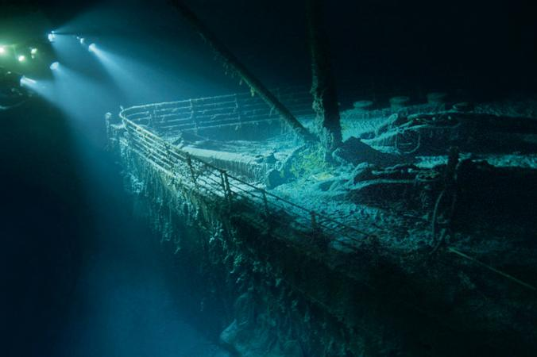
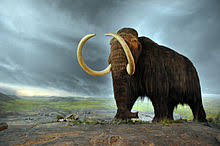

The Arctic Ocean is the smallest and shallowest of the 5 oceans.
It’s located in the Northern Hemisphere and is almost completely surrounded by
North America and Eurasia, including the countries of Russia, Norway, Iceland,
Greenland, Canada and the U.S. It is covered with ice, and approximately 25%
of the undiscovered petroleum is believed to be located in the Arctic Ocean.
The Arctic Ocean is almost completely covered in ice during the winter
and partially covered during the rest of the year. There are 3 different types of
ice that cover the ocean. They are packed ice, polar ice, and fast ice. Polar ice
doesn’t melt and can be as thin as 2 meters in the warm months and 50
meters in the winter. Pack ice only freezes completely in the winter, and fast
ice forms around the pack ice and land during the winter.
The Arctic Ocean has more fish species than anywhere else in the world.
They also have 6 seal species, polar bears, puffins, and reindeer (also known
as the caribou). They have the snowy owl (one of the largest species of owl in
the world), walruses, and many different types of fish, crab, shrimp, aquatic
plants, whales, insects, and bird. In the past, there were the large woolly mammoth


and the steller sea cows, which were hunted to extinction in 17 years.